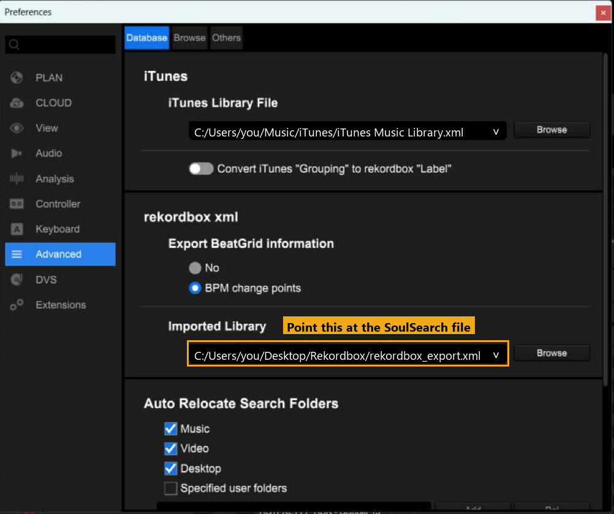
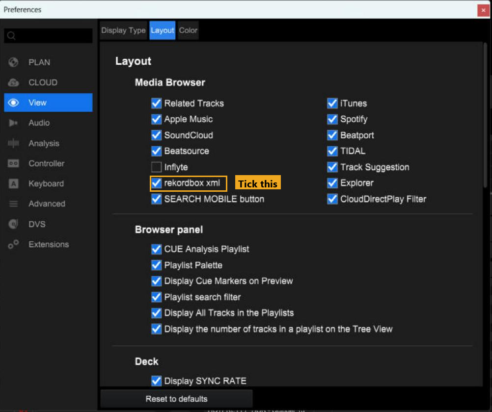
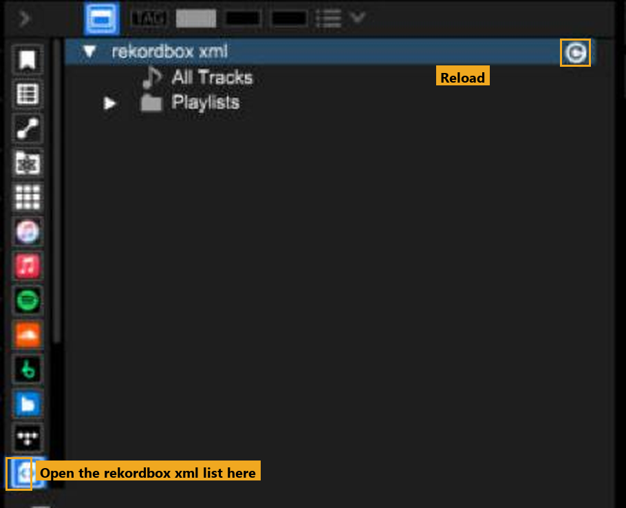
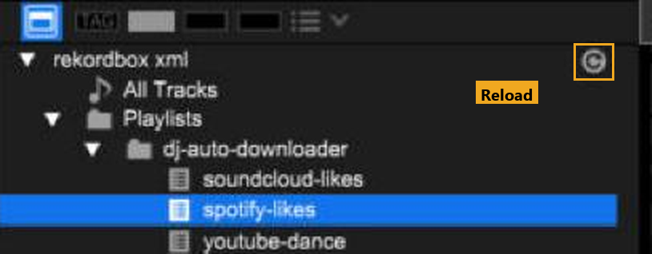
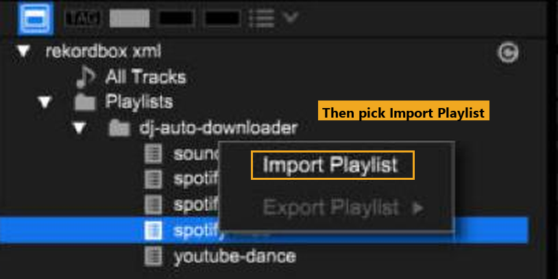

SoulSearch
SoulSearchSetup guide
The app has a Setup page that walks through this in order. This is the same thing with the reasons.
Your computer won't recognise the app. It isn't signed yet.
Windows
- Open SoulSearch.exe.
- On the blue warning, click More info, then Run anyway.
Mac
- Unzip it and drag SoulSearch to Applications.
- Right-click it, Open, then Open again.
- Still blocked: System Settings, Privacy & Security, Open Anyway.
Rekordbox folder
Pick the folder where downloads go. Each source gets its own folder next to it, which becomes its own playlist in Rekordbox.
slskd and ffmpeg
Two buttons on the Setup page, Install next to each. slskd is the Soulseek client SoulSearch drives. ffmpeg is for the SoundCloud fallback. Both come from their official sources.
File types
Setup, Quality. Pick MP3 only, FLAC first with a 320 kbps MP3 as the backup, or FLAC only. FLAC files are three to four times the size of an MP3. There's also a box to turn the SoundCloud backup off, for Soulseek only.
Soulseek login
Nothing to sign up for. The first time it starts it makes a private login of its own and keeps the password in your computer's secure store. Only fill the boxes in if you already have an account you'd rather use.
Spotify
This one takes a few minutes. Spotify makes you register an app to read your own likes.
- Go to developer.spotify.com/dashboard and create an app. Any name and description.
- In its settings add the Redirect URI
http://127.0.0.1:8888/callback. Exactly that.localhostwon't work. - Copy the Client ID and Client Secret into the Setup page.
SoundCloud
No account or key. Paste your public profile link.
YouTube
No account or key. On the Sync page, add playlists that are public or unlisted. Add as many as you like.
Apple Music and Shazam
On the Sync page, paste a shared Apple Music playlist link, or import a file.
- Apple Music: in the Music app on a Mac (or iTunes on Windows), click a playlist, then File, Library, Export Playlist. Export Library does everything.
- Shazam: in Shazam on your iPhone, go to My Music, connect Apple Music and turn on Sync your songs. They show up in Apple Music as My Shazam Tracks. Export that playlist the same way.
SoulSearch shows what's in the file before it downloads anything.
SoulSearch writes a file called rekordbox_export.xml. The Sync page shows where it is. Rekordbox reads your SoulSearch playlists from that file, so you point it there once.
1. Point Rekordbox at the file
In Rekordbox: File, Preferences, Advanced, then the Database tab. Under rekordbox xml, click Browse next to Imported Library and choose rekordbox_export.xml.

2. Make the list show up
Still in Preferences, open View, then the Layout tab. Under Media Browser, tick rekordbox xml. Close Preferences.

3. Open the list
Down the far left edge of the library there is a strip of small icons. Click the last one. The rekordbox xml list opens, with All Tracks and Playlists under it.

Rekordbox only reads the file when it opens, or when you press Reload. If you skip this, new tracks will not show up.
1. Press Reload
On the rekordbox xml row, press the small circle arrow on the right. That is Reload. Restarting Rekordbox does the same thing.

2. Import the playlist
Open Playlists, then dj-auto-downloader. Each source has its own playlist, named after its folder. Right-click the one you want and choose Import Playlist.

3. If it asks to replace
Rekordbox may say a list with the same name already exists and ask to replace it. Choose Yes. That is normal. Your new tracks are now in your collection and in that playlist.
Tracks still missing? See Troubleshooting.
Type a DJ, or one particular set, and SoulSearch finds the tracklists and fetches them. It needs a Claude to do the research. Pick one on the Setup page:
- Claude Code on this computer. Uses the Claude login you already have. Install Claude Code, run
claudein a terminal once, sign in with/login, then press Test sign-in in SoulSearch. - Your own API key. Billed per use to your Anthropic account.
- No Claude at all. The Crate Digging page has a box that gives you a research brief. Paste it into any AI, then paste the answer back.
The Research budget box on that page keeps usage down. Budget is the default.